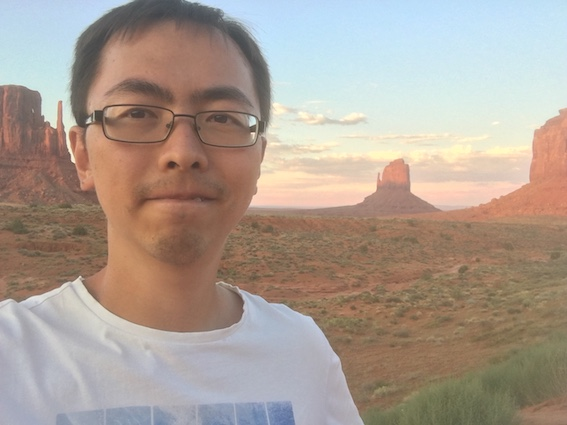

Welcome to my website! I am Biao Huang (Simplified/Traditional Chinese: 黄飚/黃飈), currently an assistant professor at Kavli Institute for Theoretical Sciences (KITS), University of Chinese Academy of Sciences, Beijing, China.
I work on many-body theories of cold atom and condensed matter physics. Recently, I developed keen interests in
highly non-equilibrium
systems. It is a lot of fun to watch the two theoretical cornerstones — Landau's scheme of symmetry breaking and the theory of topological matters — receive major renovations when the extra dimension of
time
becomes essential. My research branch outs include spin liquids, large spin ultracold gases, and the effects of background manifold on quantum systems.
(CV.pdf)
Email: phys.huang.biao@gmail.com (or phyhb@126.com)
Address: Kavli Institute for Theoretical Sciences, Chinese Academy of Sciences, Zhong Guan Cun Dong Lu No. 80, Beijing 100190, China
2021-present: Assistant Professor, Kavli Institute for Theoretical Sciences, Chinese Academy of Sciences, Beijing, China.
2019-2021: Guest Scientist, Max-Planck Institute for the Physics of Complex Systems, Germany.
2016-2019: Postdoc, University of Pittsburgh, USA. Advisor: W. Vincent Liu
2016: Ph.D. in Physics, The Ohio State University, USA. Advisor: Tin-Lun Ho
2009: B.S. in Physics, Beijing Normal University, China. Advisor: Yongge Ma